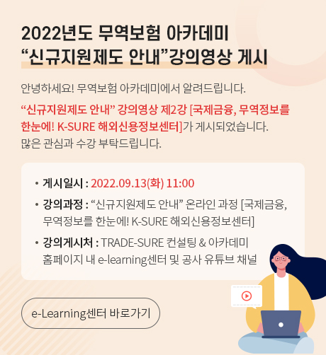
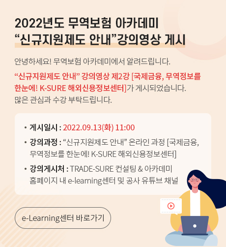

프로모션/바로가기
소식/홍보/정보
지원사업 안내
-
공통
수출/수입을 통해 외화를 획득 또는 지급하는 과정에서 발생할 수 있는 환차손익을 제거, 사전에 외화금액을 원화로 확정 시킴으로써 환율변동에 따른 위험을 Hedge하는 상품
-
선물환 방식
보험가입시 환율보다 환율 상승시에는 이익금 납부, 환율 하락시에는 보험금을 지급하는 선물환 상품(수출거래 기준)
-
범위제한선물환
환율하락에 따른 보험금과 환율상승시의 환수금을 일정 범위 이내로 제한하는 상품
-
범위선물환
일정 범위까지는 환위험을 노출시키고 일정환율 이하로 하락 시 보험금 지급, 일정환율 이상으로 상승 시 환수금 납부하는 상품
-
옵션형
보험가입시 환율(청약일 시장평균환율)보다 환율 상승시에는 이익금 납부의무를 면제하되, 환율 하락 시 보험금을 지급하는 상품
-
TRADE-SURE 컨설팅
경험이 풍부한 컨설턴트를 통해 수출기업별 1:1 맞춤형 무료 컨설팅서비스를 제공하는 사업입니다.
-
단체보험
중소중견기업은 피보험자로서 수출대금 미회수시 보험금을 수령하는 제도입니다.
-
수출안전망보험
중소기업(연간 수출 U$10만 이하)에 대한 대금미회수 위험을 보장하는 제도
-
혁신성장기업 특례지원
공동기준 품목 업종을 영위하는 중소중견기업의 무역보험(보증)을 지원합니다.
-
일자리 창출 우수기업 특별지원
일자리 창출 우수기업 대상 무역보험 한도 우대 및 보험료 할인해주는 제도입니다.
-
수출초보기업 지원
정부의 지원이 필요한 수출초보기업을 중점적으로 육성하기 위한 프로그램 입니다.
-
해외채권 회수지원 서비스
수출거래에서 대금을 회수하지 못할 경우 K-SURE의 축적된 노하우를 통해 미수채권 회수를 지원
-
해외채권 회수불능 확인
법인세법 시행령 19조의2에 의거 물품의 수출 또는 외국에서의 용역 제공으로 발생한 채권에 대하여 공사가 회수불능확정 채권임을 확인하는 서비스
-
투자위험보증사업
해외자원개발투자회사가 해외자원 개발사업에 투자하여 비상위험, 신용위험으로 입게 되는 손실의 일부를 보상
-
국외기업 신용조사 서비스
K-SURE의 해외지사 및 전 세계 신용조사기관과 연계하여 해외소재 기업의 신용조사를 실시한 후 의뢰인에게 신용조사 보고서를 제공